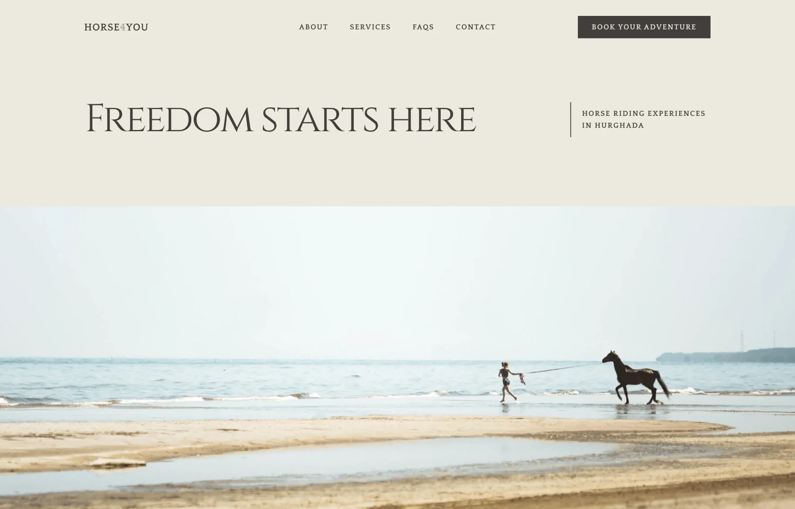
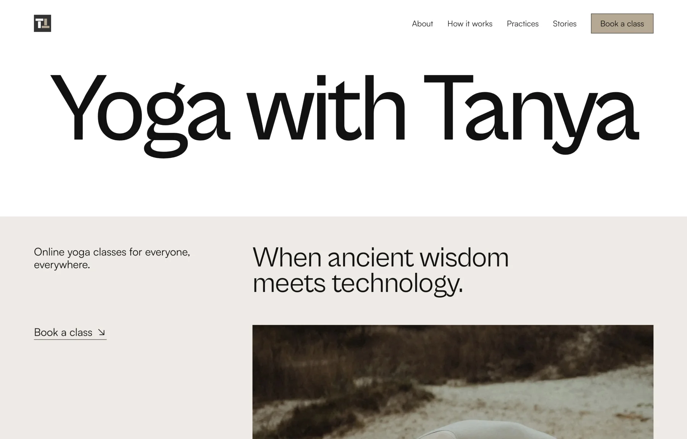
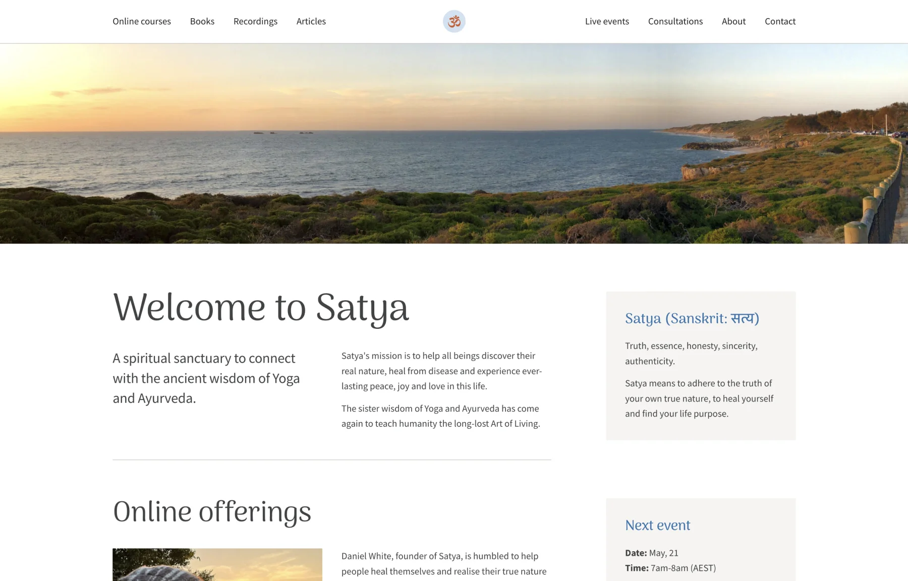
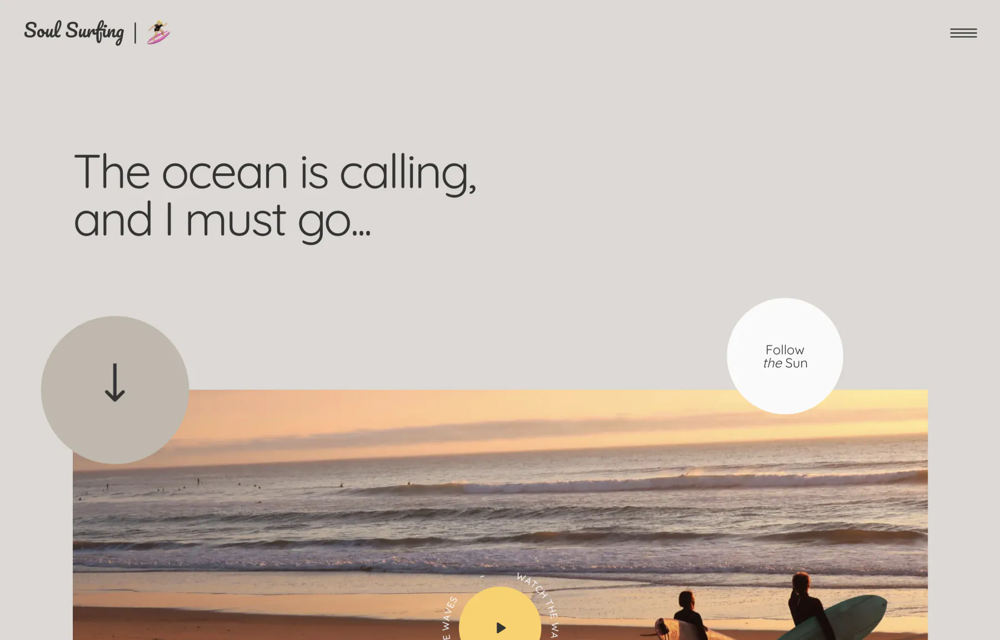
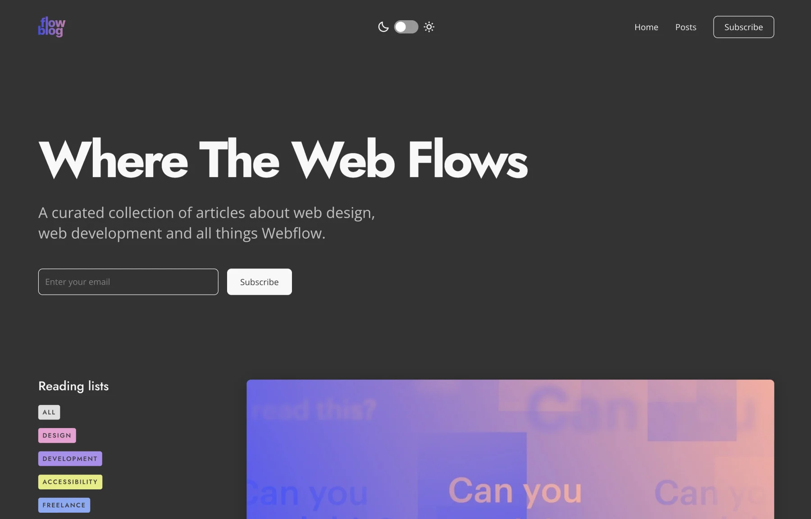
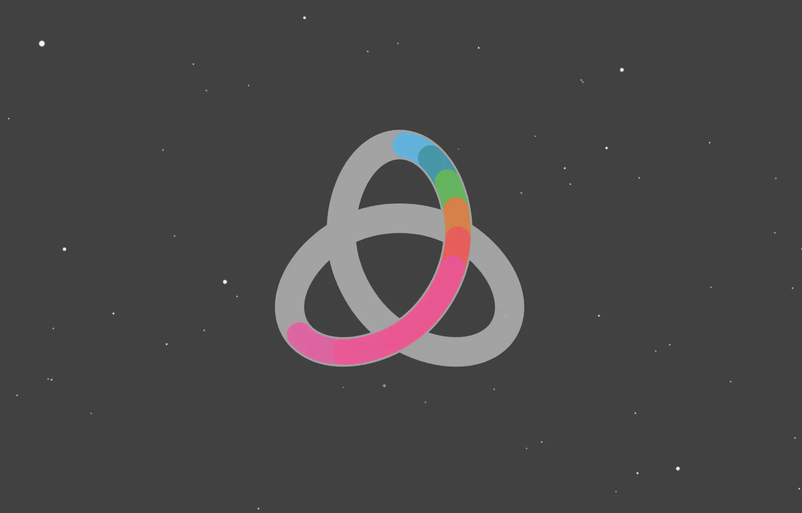

Hi, I am irina
I design and develop technically sound websites with focus on user experience and accessibility.
Simple yet beautiful aesthetics is my thing.

Horse4You | Landing page
Horse4You is a riding club in Egypt offering a range of services for tourists and locals. As I designed their website, I aimed to infuse it with both a spirit of adventure and a sense of calm. It features a monochrome colour scheme, touches of animations and an engaging full-width background video.

Yoga with Tanya | Landing page
Tanya is a private yoga teacher whose goal is to make the practice of yoga easy and accessible for everyone. I chose an unusual layout for her website to highlight Tanya's unique personality and teaching style. The natural mellow shades refer to the essential qualities of yoga. This site appeared in a number of curated website collections.

Satya Yoga & Ayurveda | CMS
The simplicity of this website is intentional. Daniel White, founder of Satya, wanted to showcase his work in a humble and unobtrusive way. Despite the basic look, the functionality of the site is rich, including multiple CMS collections, downloadable resources, custom audio player and third-party integrations.

Soul Surfing | Animations
While doing Joseph Berry's animation course, I decided to turn it into a passion project and redesign his original award winning website. A combination of Joseph's insane animation skills and my love of the ocean helped me to create this site which has become my favourite Webflow build so far.

Flow Blog | CMS
This is a blog concept that I created as a case submission for ADPList x Webflow Series, and it was featured in Webflow Series Demo Day. My goal was to provide an excellent reading experience and a comfortable browsing. One of my favourite features here is the Light / Dark mode that is persistent throughout the website.

Trapped in Eternity | Just for fun
The most challenging part of creating this custom code animation was calculating the SVG path of the shape. First I drew it on a piece of paper, and then used my mathematical background to come up with the correct numbers. After it was done, populating the shape with the trapped colours was a piece of cake.
To bring your ideas to life — please get in touch